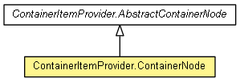

org.eclipse.net4j.util.ui.views
Class ContainerItemProvider.ContainerNode
java.lang.Object
 org.eclipse.net4j.util.ui.views.ContainerItemProvider.AbstractNode
org.eclipse.net4j.util.ui.views.ContainerItemProvider.AbstractContainerNode
org.eclipse.net4j.util.ui.views.ContainerItemProvider.ContainerNode
org.eclipse.net4j.util.ui.views.ContainerItemProvider.AbstractNode
org.eclipse.net4j.util.ui.views.ContainerItemProvider.AbstractContainerNode
org.eclipse.net4j.util.ui.views.ContainerItemProvider.ContainerNode
- All Implemented Interfaces:
- ContainerItemProvider.Node
- Enclosing class:
- ContainerItemProvider<CONTAINER extends IContainer<Object>>
- public class ContainerItemProvider.ContainerNode
- extends ContainerItemProvider.AbstractContainerNode

ContainerItemProvider.ContainerNode
public ContainerItemProvider.ContainerNode(ContainerItemProvider.Node parent,
IContainer<Object> container)
dispose
public void dispose()
- Specified by:
dispose in interface ContainerItemProvider.Node- Overrides:
dispose in class ContainerItemProvider.AbstractContainerNode
getElement
public Object getElement()
Copyright (c) 2011, 2012 Eike Stepper (Berlin, Germany) and others.